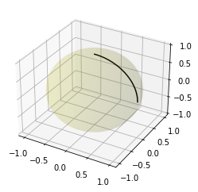

重力と測地線 (2)#
Geodesic#


Geodesic equation#
半径 \(r\) の球面を極座標 \((\theta, \phi)\) で表す:
R3_s.base_scalars()
[r, theta, phi]
s = R3_s.transform(R3_r, R3_s.base_scalars())
s
\(\theta\) と \(\phi\) を媒介変数 \(t\) の関数とみなす:
t = Symbol('t')
theta = Function('theta')(t)
phi = Function('phi')(t)
funcs = (theta, phi)
for i in range(2):
display(funcs[i])
for i in range(2):
display(funcs[i].diff())
for i in range(2):
display(funcs[i].diff().diff())
測地線の公式に代入する:
chr2.tensor()
import itertools
geodesic=[0,0]
for i in range(2):
geodesic[i] = funcs[i].diff().diff()
for j,k in itertools.product((0,1), repeat=2):
geodesic[i] += (chr2[i,j,k] * funcs[j].diff() * funcs[k].diff())
display(geodesic[i])
測地線は一次元なので、\(\theta\) を \(\phi = \phi(t)\) の関数とみなし、媒介変数 \(t\) で微分する。
theta = Function('theta')(phi)
theta
display(theta, phi)
phi.diff()
theta.diff(t)
theta.diff().diff()
geodesic=[0,0]
funcs = (theta, phi)
for i in range(2):
geodesic[i] = funcs[i].diff().diff()
for j,k in itertools.product((0,1), repeat=2):
geodesic[i] += (chr2[i,j,k] * funcs[j].diff() * funcs[k].diff())
display(geodesic[i])
次のように簡略化する:
phi.diff().diff()
二つ目の式 geodesic[1] を \(\phi''\) (phi.diff().diff()) について解く:
from sympy.solvers import solve
g1, = solve(geodesic[1], phi.diff().diff())
display(g1)
一つ目の式 geodesic[0] に代入する:
sympy.simplify(geodesic[0].subs(phi.diff().diff(), g1))
次の簡略化された測地線の方程式が得られる:
さらに、\(\omega\) を次のように定義する:
theta = Function('theta')(t)
display(theta.diff(), theta.diff().diff())
cot(theta)
sympy.simplify(cot(theta).diff())
sympy.simplify(cot(theta).diff().diff())
omega = Function('omega')(t)
omega
display(omega.diff(), omega.diff().diff())
\(\omega\) に式を代入してしまうと、\(\omega\) 自身やその微分について、評価を保留して記号として参照できないため、次のように間接的な手法で値を求めていく:
定義式の左辺 \(\cot(\theta(t))\) を微分すると \(\omega'\) : omega.diff() が得られる:
sympy.simplify(cot(theta).diff())
上式を solve()を使って \(\theta'\) : theta.diff() について解き、\(\omega'\) で表す:
theta1, = solve(omega.diff() - sympy.simplify(cot(theta).diff()), theta.diff())
display(theta1)
\(\theta' = - \omega' \sin^2(\theta)\) が得られる。
同じように \(\cot(\theta(t))\) を二回微分すると \(\omega''\) : omega.diff().diff() が得られる:
sympy.simplify(cot(theta).diff().diff())
上式を \(\theta''\) : theta.diff().diff() について解き、\(\omega''\), \(\omega'\) で表す:
theta.diff().diff()
theta2, = solve(omega.diff().diff() - sympy.simplify(cot(theta).diff()).diff(), theta.diff().diff())
display(theta2)
theta2 = sympy.simplify(theta2.subs(theta.diff(), theta1))
theta2
上で得られた \(\theta''\) : theta2, \(\theta'\) : theta1 を測地線の方程式に代入する:
theta2 - 2 * cot(theta) * (theta1)**2 - cos(theta) * sin(theta)
式の簡略化に先立って、三角関数の倍角公式の適用を避けるため \(\sin^2(\theta)\) で割っておく:
sympy.expand(_ / sin(theta)**2)
sympy.simplify(_)
\(\omega(t) = \cot(\theta(t))\) と置いていたので、測地線の方程式は次の微分方程式と等価になる:
微分方程式を解く:
t = Symbol('t')
omega = Function('omega')(t)
omega
omega.diff().diff()
from sympy.solvers import solve, dsolve
dsolve(omega.diff().diff() + omega, omega)
球面上の大円を表す方程式となる。
from scipy.spatial import geometric_slerp
import matplotlib.pyplot as plt
from mpl_toolkits.mplot3d import proj3d
fig = plt.figure()
ax = fig.add_subplot(111, projection='3d')
u = np.linspace(0, 2 * np.pi, 100)
v = np.linspace(0, np.pi, 100)
x = np.outer(np.cos(u), np.sin(v))
y = np.outer(np.sin(u), np.sin(v))
z = np.outer(np.ones(np.size(u)), np.cos(v))
ax.plot_surface(x, y, z, color='y', alpha=0.1)
start = np.array([1, 0, 0])
end = np.array([0, 0, 1])
t_vals = np.linspace(0, 1, 200)
result = geometric_slerp(start,
end,
t_vals)
ax.plot(result[...,0],
result[...,1],
result[...,2],
c='k')
#ax.set_aspect('equal')
plt.show()

%%ai vioras
pythonで楕円体を描画できますか
はい、Pythonを使用して楕円体を描画することができます！主に matplotlib ライブラリや numpy を使うことで、3Dの楕円体を可視化することが可能です。以下に楕円体を描画するコードの例を示します。
楕円体の方程式は次の通りです：
$$ \frac{x^2}{a^2} + \frac{y^2}{b^2} + \frac{z^2}{c^2} = 1 $$
ここで、$a$, $b$, $c$ は楕円体の各軸の長さです（それぞれ x, y, z 軸方向のスケール）。
以下は実際に楕円体を描画するPythonコードです：
必要なライブラリのインストール
もしライブラリがインストールされていない場合は、以下のコマンドでそれらを事前にインストールしてください：
pip install numpy matplotlib
楕円体を描画するコード
import numpy as np
import matplotlib.pyplot as plt
from mpl_toolkits.mplot3d import Axes3D
# 楕円体の軸の長さを指定
a = 2 # x方向の半径
b = 1 # y方向の半径
c = 1.5 # z方向の半径
# 角度をパラメータ化してグリッドを作成
u = np.linspace(0, 2 * np.pi, 100) # 0から2πの範囲で100個の値
v = np.linspace(0, np.pi, 100) # 0からπの範囲で100個の値
u, v = np.meshgrid(u, v)
# 楕円体のパラメトリック方程式
x = a * np.cos(u) * np.sin(v)
y = b * np.sin(u) * np.sin(v)
z = c * np.cos(v)
# 3Dプロットを作成
fig = plt.figure(figsize=(8, 8))
ax = fig.add_subplot(111, projection='3d')
# 楕円体の描画
ax.plot_surface(x, y, z, color='cyan', alpha=0.7, edgecolor='k')
# 軸のラベル
ax.set_xlabel("X")
ax.set_ylabel("Y")
ax.set_zlabel("Z")
# グラフの表示
plt.show()
このコードの仕組み
軸の長さ：
a,b,cを楕円体の各軸の半径として設定します。パラメトリック方程式：楕円体の表面をパラメトリック形式で記述します。$\cos$ と $\sin$ を使って楕円体を描画するためのデータ点を生成します。
plot_surface：生成した3Dデータをplot_surfaceメソッドで描画します。可視化：透明度 (
alpha) を設定して、表面が半透明に見えるようにしています。
このコードを実行すると、楕円体が3Dで表示されます。カスタマイズしたい場合には、a, b, c を変更して、自分の目的に合った形状を描画することが簡単にできます！
何か質問があればお気軽にどうぞ 😊